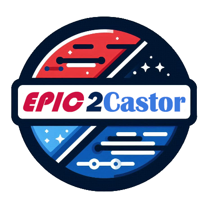

Interactive Shiny application for mapping EPIC hospital data to Castor EDC
Key Features:
Team:
Funded by ZonMw — clinical fellowship to A. van Laarhoven (09032212110006).
View project on ZonMw
Technology:
Built with R Shiny, DataTables, Select2, processx, and jsonlite. Uses SQLite for persistent storage and the Castor EDC REST API for data exchange.